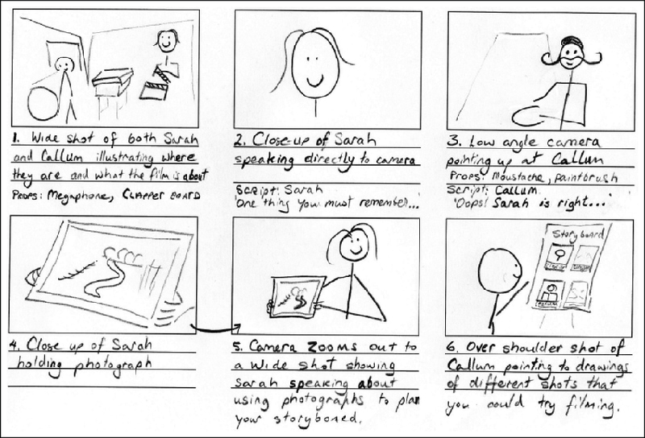

Storytelling
Human beings have a rich tradition of storytelling as a method of transmitting learning and culture to the next generation, a practice as old as language itself. When we’re listening to a story – one that’s rich in detail and metaphor and includes compelling characters – research has shown that we tend to imagine ourselves in the situation. This has powerful implications for learning. We will explore the power of storytelling and techniques that you can apply to your media and multimedia learning projects to maximize their impact.
Digital storytelling is not about creating media – it’s about creating meaning. ~ Silvia Rosenthal Tolisano
Storytelling
Stories can engage us on a deeper level than simple facts. When we hear a story, our brains activate in a way that allows us to inhabit the experience.
Studies show that when a story mentions “cinnamon,” the part of the brain responsible for smell is triggered (Chow et al. 2014). Similarly, descriptive language that evokes other senses activates the corresponding brain regions. For example, phrases like “leathery hands” or “velvet voice” recruit the part of the brain responsible for processing touch (González et al. 2006).
Beyond this sensory engagement, research shows that narrative is a powerful tool for developing empathy and memory. Regular exposure to stories enhances our “theory of mind”—the ability to recognize that others have their own thoughts and feelings (Boulenger et al. 2009). This not only improves social interactions but also boosts information retention, making key details more memorable than when they are presented as simple facts.
The following exerpt is from Chrona, J. (2022). Wayi wah! : Indigenous pedagogies: An act for reconciliation and anti-racist education. Portage & Main Press. (pp. 154-155)
The Power of Story for Teaching and Learning
Story is understood as a fundamental means through which people can learn in all aspects of life. Story can also help learners to organize new concepts that develop from their learning. It is important to understand that the meaning of the word story in Indigenous contexts is different than in post-industrial, Western, Eurocentric contexts. Stories are narratives (traditionally oral, but now also written) that are used to teach skills, transmit cultural values and mores, convey news, record family and community histories, and explain the natural world. In Indigenous contexts, stories do not equate with the construct of a “short story” that is often taught in Euro-Western language arts classrooms. Stories in Indigenous contexts do not necessarily follow what is often taught as the conventional story structure (i.e., follow the “story arc”) and can instead have complex circular or cyclical structures. Story is a medium through which we can all learn.
The story is also an evolving form in Indigenous cultures, as is evidenced by the powerful work of many contemporary storytellers who create story through spoken word, song, writing, and music. The explicit inclusion of Indigenous oral, written, visual, and digital text in schools and classrooms is based on the understanding that this is the land (now known as Canada) from which this rich text (in all its forms) originates.
Although it is easy to focus on story in English language arts (ELA) contexts, the power of story for teaching and learning transcends this curricular area. The use of story in any area is foundational to teaching and learning in Indigenous cultures. It is as applicable in the teaching and learning of science and math as it is in ELA, arts, and social sciences.
So what does all this research mean for teaching and learning? It means that we can help learners imagine new experiences, inspire empathy and promote understanding by using the power of storytelling. We can help learners imagine situations that they haven’t yet encountered, put information in context and hold on to key messages longer. In our media and multimedia learning design, we can use storytelling techniques to create more effective, engaging learning with a greater long-term impact.
Kurt Vonnegut famously wrote a Master’s thesis on the shape of stories. His thesis was rejected by his program at the University of Chicago, and Vonnegut went on to become one of the most popular authors of his time.
How to Tell a Good Story
There are so many different models to help you tell a good story. When you explore the different models, pay close attention to which features overlap. Note Below are just two of the many options:
7 Storytelling Techniques Used by the Most Inspiring TED Presenters (Chibana 2015) - Immerse your audience in a story.
- Tell a personal story.
- Create suspense.
- Bring characters to life.
- Show. Don’t tell.
- Build up to a S.T.A.R. moment.
- End with a positive takeaway.
Give me 9min, and I’ll improve your storytelling skills by 176% (Humm 2025) In this video, 5 components of a good story are highlighted:
- Location
- Action
- Thoughts
- Emotions
- Dialogue
TED Talks
Storytelling is so important that TED Talks have an entire topic devoted to it. They’re an incredible resource for ideas from talented individuals. You can explore them here.
Tone, Mood, and Voice Tone, mood, and voice shape the overall feeling of a story. They are less about what is being said and more about how it feels to the reader. In an educational context, it might be tempting to think these elements are unnecessary, but that overlooks an important reality: people are emotional beings. Motivation and emotion often act as gatekeepers to learning.
While content is the primary message being communicated, tone, mood, and voice strongly influence how that content is received. In this way, they function as a kind of metacommunication, shaping learners’ engagement and understanding alongside the educational material itself.
I’ve learned that people will forget what you said, people will forget what you did, but people will never forget how you made them feel. ~ Maya Angelou
Here are two videos that explore tone. The first takes a more introductory approach, focusing on tone in storytelling, while the second is about tone in academic writing.
I encourage you to consider the emotions you convey through your storytelling and writing. There is always a tone and mood being communicated — there’s no avoiding it. By learning how to recognize and control these elements, they can become valuable tools in your writing.
Make a Plan: Storyboarding and Journey Mapping
It can be tempting sometimes to just jump into making. But preparation and planning will save you time, ensure that your message is clear and in alignment with your learning outcomes, and avoid unnecessarily long and meandering experiences. Storyboarding is a powerful tool crucial to many industries, including film and user experience design. It has incredible potential and should be used more often in education.
An unscripted video wastes time, takes too much effort, and is painful to watch. ~ Justin Simon
Use clear, informal language and create a clear structure for your script with an introduction and conclusion. Read your script aloud to check that it is engaging, conveys your core message and flows naturally. This is also the best way to spot repetition and awkward wording. You can add further details, such as how you want a viewer to ‘feel’, ‘think’, or ‘learn’.

Storyboarding is the process of creating a map for making media (such as a comic, video, or website). It can be as simple or complex as you need it to be, including just text and description or images and sketch notes – whatever works.
The storyboard not only helps you set up shots efficiently, it also saves a lot of time when it comes to editing. With the storyboard in hand you will know exactly how to create your final product.
Reflections
Choose one or more of these questions to help inspire your blog post for this module or share your own insights into the topic.
- Describe a meaningful learning experience that started with a story that you heard. What made it impactful for you? What senses did it appeal to? Did you recognize any of the storytelling techniques reviewed this week?
- Can you support what to-do and what not-to-do in storytelling through the lens of Mayer’s Cognitive Theory of Multimedia Learning?
- In the reading this week, 7 Storytelling Techniques Used by the Most Inspiring TED Presenters, which of the presenters did you find most compelling? What technique(s) did you recognize in their talk?
- What storytelling techniques have you used instinctively and which ones require more work for you? Which techniques will you focus on moving forward?